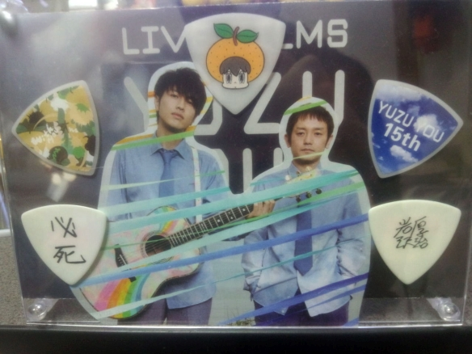

鹵管理人・けんぼの楽器やゆずものを紹介します鹵
けんぼはYAMAHAのFGシリーズが大好きなのでアコギはYAMAHAしか持っておりません。
※項目をクリックすると詳細が出てきてもう１度クリックすると折りたたみます。
 YAMAHA TheFG～調和 PIANO～
YAMAHA TheFG～調和 PIANO～-
YAMAHA TheFG特別カラーのブラックです！
調和 PIANOという名前はもともとこのギターはピックガードがアイボリーカラーで、
ピアノの黒鍵と白鍵をイメージして名付けられたそうです。
購入当時のブログ記事・写真はこちら。
岩沢さんの黒１に憧れて黒いTheFGを探し求めてようやくみつけた子です！
現在のメイン機。ペグを岩沢さんと同じゴトーのペグに交換済で音に芯が出るようになり、まさに岩沢FGサウンド！
ピックアップはFishman社製のEllipseMatrixBlendを積んでいます。
これはたまたま岩沢さんの白1と同じ物でした。無意識に岩沢イズムを求めているみたいです(笑)
音が良く弾きやすく、そしてカッコいい！
本当に最高のギターです！
愛称はくろすけ
トップ：スプルース単板
サイド・バック：マホガニー単板 - YAMAHA FG-350E
-
YAMAHA FG-350Eです！1972年～1974年までの2年間しか製造されなかったグリーンラベルのギターです！
このギターとは一番付き合いが長くて、ギター覚えたての頃に某オークションサイトでひとめぼれして手に入れたギターです。
形はFGなんだけど、見た目はJ-160Eみたいでこの一本でゆず！みたいな感じのギター(笑)
手に入れた時はフレットもナットもすり減ってて非常に弾きにくかったんですが、リペアしてもらって見事に復活しました！
グリーンラベル時代特有のネックの太さが逆にネック反りを防いでくれていたのかもしれないです。
愛称はきいち君
トップ：スプルース
サイド・バック：インドローズ - YAMAHA FG-180
-
YAMAHA FG-180です！これは最初期物のライトグリーンラベルです！
ヘッドのYAMAHAロゴも今のロゴに比べて縦につぶした感じで、最初期型を表しています。
3年の月日をかけて自作のネック矯正機を使ってネックの元起きを少しでも直そうと試みてきました。
結果は良好です！010程の太さの弦なら普通に弾けるほど矯正できました！
最悪はネックリセットまで考えていたのですがそれほど重症ではなさそうで良かったです。でも一度リペアマンさんに診てもらおうと思います。
FG生誕50周年モデルには目もくれず、今いる子たちを最高の状態にしたい！
この最初期モデルを復活させて後の世代に託していくのがこの時代に生きる我々の使命だと"勝手に"思っております(笑)
愛称は敬意を表して"先生"です！
トップ：スプルース
サイド・バック：マホガニー - お花ギター
-
お花ギターです！
YAMAHAのFG-512SJがこのギターの素となっています。
完全に趣味で作ってみました(笑)
本物のお花ギターとは形もサイズも違うんでデザインのバランス悪いですが自己満のインテリアなので大丈夫です！(笑)
お花ギター製作日記はこちら。
トップ：スプルース単板
サイド・バック：ナトー - YAMAHA P-37D ピアニカ
-
YAMAHA製37鍵盤のピアニカ。北川さんとおそろい。
ちなみに正式名称は鍵盤ハーモニカで、メーカーによって呼び名が違います。YAMAHAはピアニカ。
プチカスタムで全鍵盤の裏に車用の吸音材(スポンジみたいなもの)を仕込んで、鍵盤のカタカタした打鍵音を極力出ないようにしています。
このために車も持ってないのにわざわざ車屋さんまで行きました(笑) - TOMBO MAJOR BOY
-
TOMBO製のハーモニカ メジャーボーイです。
同じくTOMBO製の岩沢さんも使用している12本入るハープケースに入れています。 - MAX TONE PW-2
-
タンバリンです！北川さんはこのタンバリンの塗装を変えたりデコレーションしたりしています。
某家電量販店で購入しました(笑) - TOMBO MAJOR BOY ゆず 10TH ANNIVERSARY KojiIwasawa LimitedEdition
-
はい！これは宝物です！
K.IWASAWAのイニシャルが輝いています！ゆずのね会場各日100個、合計500個限定で販売されたハーモニカです。
なんとかゲットすることが出来ました！ピアニカも機会があればぜひ手に入れたいですね！ - ピック
- 
これも宝物です！
LIVE FILMS YUZU YOU DOMEのローソン限定プレミアムBOXに付いていたピックと、
2人が普段練習などで使っている、
北川さん仕様の"必死"
岩沢さん仕様の"岩沢厚治"
ピックです！
写真立てにポップを切り抜いてきれいに飾っています(^^)